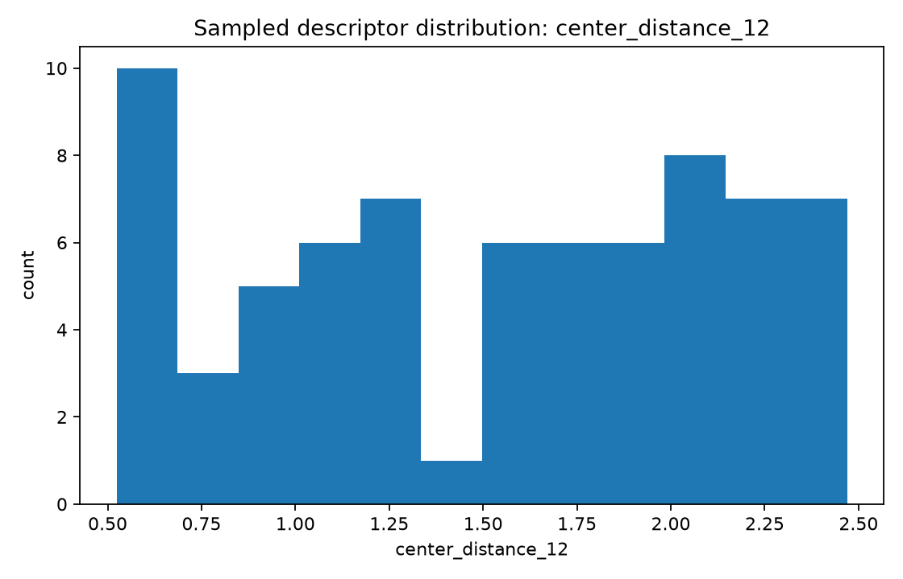
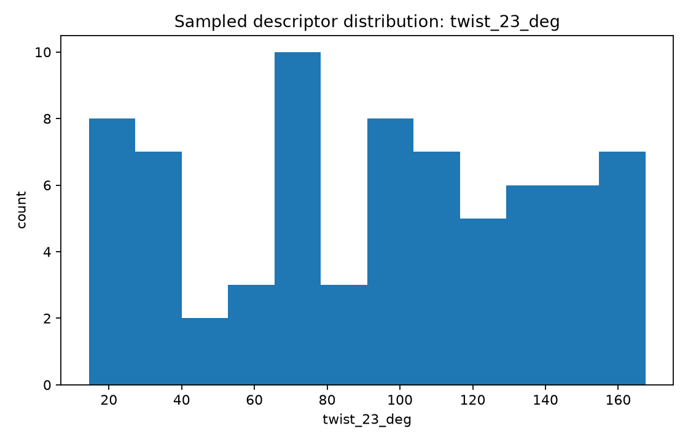
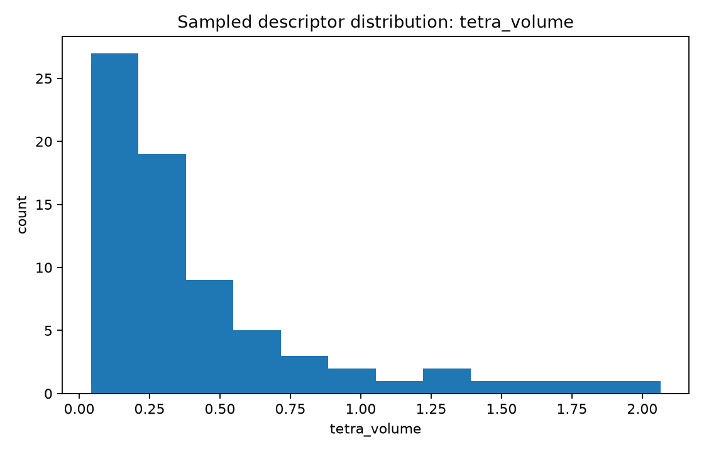

Focus: list a broad parameter inventory, generate initial synthetic geometry instances, and graph several descriptor distributions.
Total samples: 72
center_distance_12 — Normalized adjacent joint-center distance L12/Lrefcenter_distance_23 — Normalized adjacent joint-center distance L23/Lrefcenter_distance_34 — Normalized adjacent joint-center distance L34/Lreftwist_12_deg — Angle between consecutive axes near joints 1 and 2twist_23_deg — Angle between consecutive axes near joints 2 and 3twist_34_deg — Angle between consecutive axes near joints 3 and 4common_normal_13 — Shortest separation between selected nonadjacent axes 1 and 3common_normal_24 — Shortest separation between selected nonadjacent axes 2 and 4offset_1 — Signed offset along axis 1 to a common-normal constructionoffset_2 — Signed offset along axis 2 to a common-normal constructionaxis_to_center_1 — Distance from selected revolute axis 1 to an opposite joint centeraxis_to_center_2 — Distance from selected revolute axis 2 to an opposite joint centertetra_volume — Signed normalized tetrahedral volume built from four reference pointscoplanarity_residual — Near-zero indicates nearly planar center geometrychirality — Right- or left-handed center geometry flaghas_intersection_pair — Boolean flag for exact pairwise axis intersectionhas_mirror_symmetry — Boolean flag for mirror-symmetric construction


| Sample | Family | Seed | L12 | L23 | twist23 | tetra volume |
|---|---|---|---|---|---|---|
| uuur_000 | UUUR | 7990034 | 1.693 | 1.729 | 53.1 | 0.215 |
| uuur_001 | UUUR | 340222 | 1.825 | 0.951 | 48.0 | 0.194 |
| uuur_002 | UUUR | 4727381 | 2.439 | 2.190 | 14.5 | 0.351 |
| uuur_003 | UUUR | 3388226 | 0.999 | 1.130 | 158.1 | 0.079 |
| uuur_004 | UUUR | 3286013 | 0.827 | 1.789 | 158.4 | 0.102 |
| uuur_005 | UUUR | 9774226 | 1.081 | 0.561 | 146.9 | 0.078 |
| uuur_006 | UUUR | 933549 | 0.925 | 1.588 | 141.8 | 0.191 |
| uuur_007 | UUUR | 2851858 | 1.015 | 1.283 | 167.5 | 0.054 |
| uuur_008 | UUUR | 1967607 | 0.778 | 0.783 | 59.6 | 0.196 |
| uuur_009 | UUUR | 9352468 | 2.017 | 2.410 | 41.0 | 0.338 |
| uuur_010 | UUUR | 7451790 | 1.586 | 1.555 | 152.4 | 0.278 |
| uuur_011 | UUUR | 1264315 | 0.636 | 1.164 | 153.8 | 0.130 |
| Criterion | Sample | Family | L12 | twist23 | tetra volume |
|---|---|---|---|---|---|
| min center_distance_12 | urrs_010 | URRS | 0.524 | 125.6 | 0.105 |
| max center_distance_12 | uruu_003 | URUU | 2.470 | 73.6 | 1.346 |
| min twist_23_deg | uuur_002 | UUUR | 2.439 | 14.5 | 0.351 |
| max twist_23_deg | uuur_007 | UUUR | 1.015 | 167.5 | 0.054 |
| min tetra_volume | uruu_007 | URUU | 1.689 | 162.4 | 0.042 |
| max tetra_volume | uruu_009 | URUU | 2.453 | 108.0 | 2.064 |